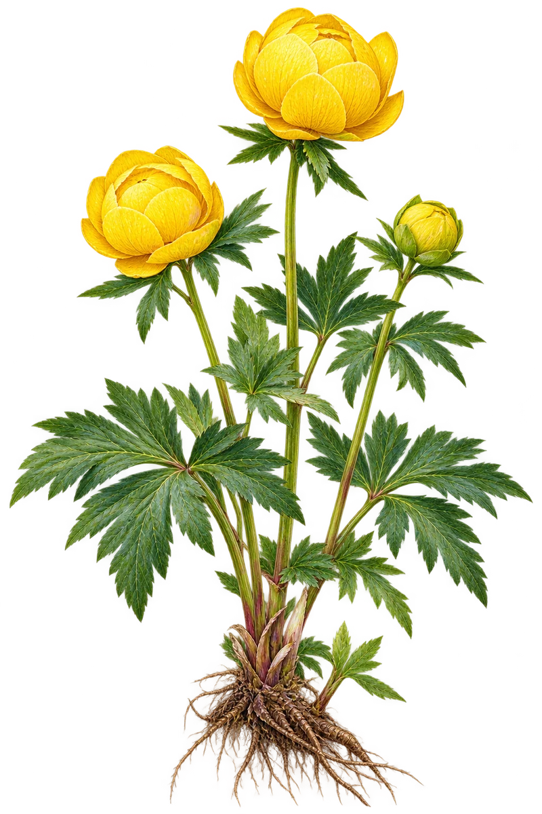
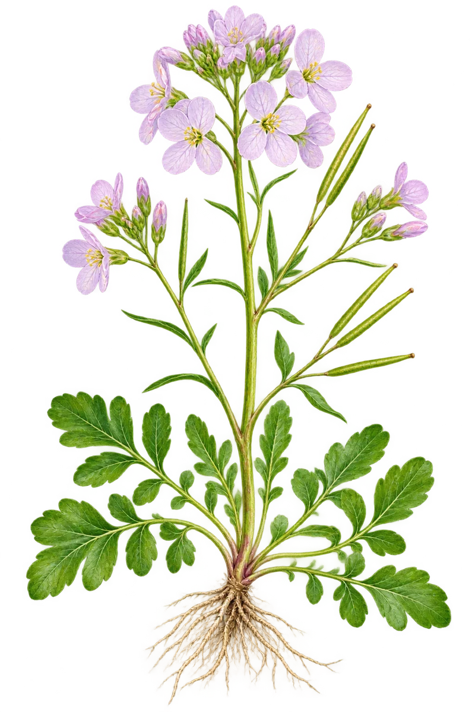

Ballblom
Trollius europaeusMå tegnes om
De gule blomsterbladlignende begerbladene står for åpent. Kontroller lukket kuleform og dypt delte blad før ny produksjon.
ArtsbeskrivelseTo nye transparente motiv – ikke godkjent. Ballblom er allerede flagget for omtegning på grunn av for åpen blomst. Engkarse må artskontrolleres. Ingen av bildene overstyrer eksisterende artsfotografier.

Må tegnes om
De gule blomsterbladlignende begerbladene står for åpent. Kontroller lukket kuleform og dypt delte blad før ny produksjon.
Artsbeskrivelse
Krever botanisk artsrevisjon
Kontroller fire kronblad, seks pollenbærere, ulik form på grunnblad og stengelblad, og riktige fruktskulper.
Artsbeskrivelse